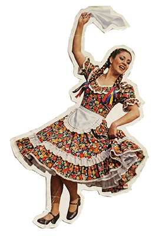
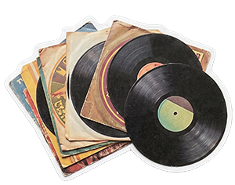
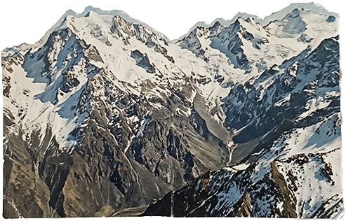
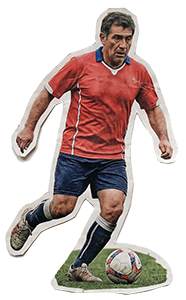

Opción D · Diccionario
a·nó·ma·la
adj. / medio cultural
1.Que se aparta de lo esperado.
2.Multiplataforma cultural y laboratorio territorial que conecta periodismo, creación y pensamiento crítico.
3.Intensa, dispersa, distinta.
Opción E · Preguntas
¿Quién habla?
¿Quién falta?
¿Desde dónde se cuenta?
Anómala hace estas preguntas a la cultura. Somos un medio que conecta periodismo, creación y pensamiento crítico para buscar lo que todavía no tiene nombre.
Conoce quiénes somos →Opción F · Frase con recortes
Conectamos voces

, disciplinas
, territorios
y públicos
que rara vez dialogan.Anómala es una multiplataforma cultural y un laboratorio territorial. Periodismo, creación y pensamiento crítico.
Conoce quiénes somos →